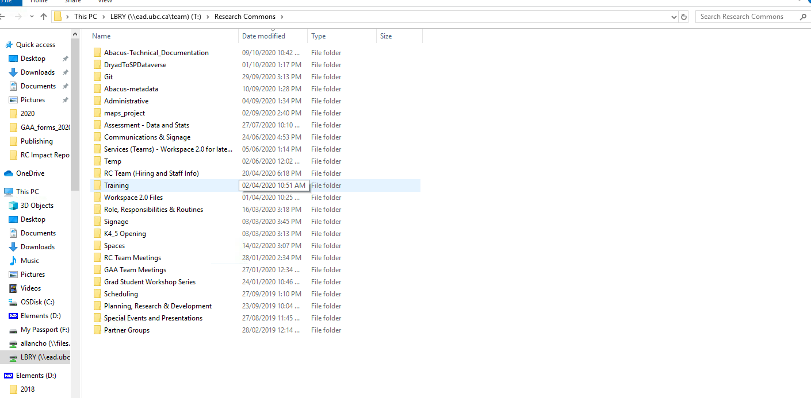
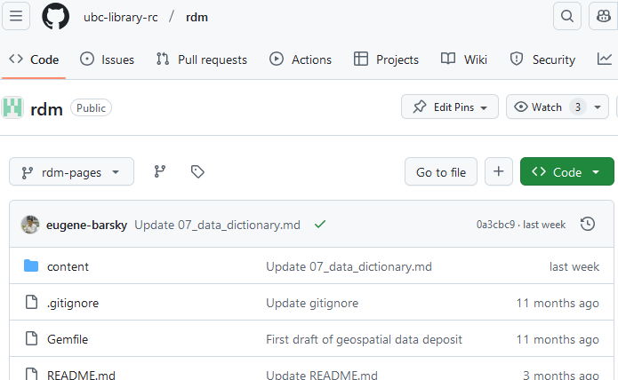
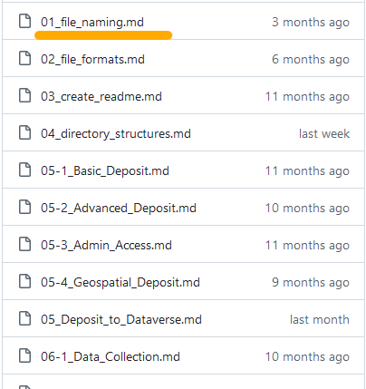
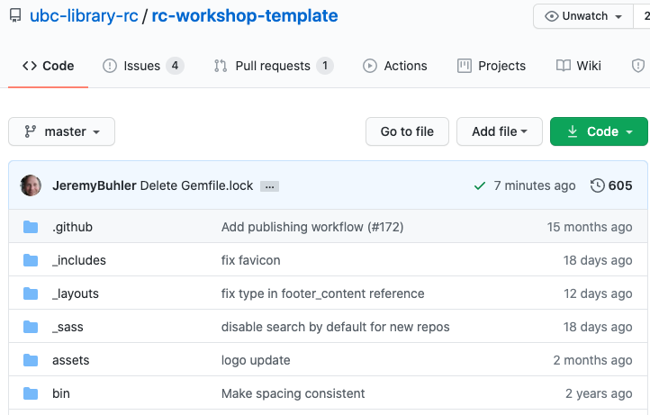

Ekatarina (Eka) Grgurić Digital Scholarship Librarian
eka.grguric@ubc.ca
Eugene Barsky
Research Data Management Librarian
eugene.barsky@ubc.ca
UBC Library, October 2024
UBC Library Research Commons
A multidisciplinary hub supporting research endeavours, partnerships, and education.
New team, new approach
In January 2020
Working and learning together
"Pre-GitHub"
Many internal shared folders
Non-portable & non-reproducible
Uncoordinated approaches
Disorganized Workflow

Proposed New Approach
Collaborative, using freely available tools accessible outside of the university
Git, GitHub, Github Pages & Reveal.js
Presentations through Github Pages
Why GitHub?
Existing experience on the team with Git and Github
Already in use by members of the team for similar cases (GIS workshops)
This included workshop content in repo and Reveal.js slides via GH Pages
Community inspiration
Inspiration from the Carpentries' OER model
Philosophical desire to lower barriers to access and remixing
Not a UBC specific platform / approach
Content requires only a browser window to access and is downlodable for bad connections
Upskilling
New team, new desire to upskill and experiment with new workflows
Goal to better support technical consults
Sustainability
Text-based approach easy to move, remix, repurpose
Better ownership, collaboration, and maintenance workflows with growth in size of unit
Currently, Github Pages is free and unlimited for our use case
The workflow
Setup
GitHub account for each contributor
GitHub organization for Research Commons
Content
Markdown files
reveal.js html files
Skills
Markdown (everyone)
Git/GitHub (everyone)
Jekyll themes (someone)
From Markdown content...
# Introduction to Docker
This workshop is meant to introduce you to the set of virtualization
tools referred to as [Docker](https://www.docker.com/), which allow
you to use, create, and share container images.

Retrieved from [Bo-Yi Wu on Flicker](https://www.flickr.com/photos/appleboy/25660808075), [CC BY 2.0](https://creativecommons.org/licenses/by/2.0/)
[Containers](https://www.cio.com/article/2924995/what-are-containers-and-why-do-you-need-them.html)
create small reproducible computing workspaces on your computer, to
which you can ascribe specific libraries and constraints to
replicate specific environments.
## Workshop Objectives
We'll first discuss broader concepts from the computing virtualization
space, disambiguate the many interrelated components of the
Docker ecosystem, and explore some use cases demonstrating the
value of containers in both tech and academia.
Then we'll walk through an overview of install pathways for different
operating systems and intended uses, touching on some general
troubleshooting points and the cognitive competencies cultivated
by dev ops tools like these.
...to published workshop site
Each workshop is a GitHub repo


Introduction to Docker workshop created by Chelsea Palmer
Jekyll theme in its own repo

The Research Commons uses a modified version of the Just the Docs Jekyll theme
Applying theme to workshop sites: _config.yml
title: Intro to Docker
remote_theme: ubc-library-rc/rc-workshop-template
github_repo_url: "https://github.com/ubc-library-rc/intro-docker/"
# license information for workshop content
license_name: "Creative Commons Attribution 4.0 International License"
license_url: "http://creativecommons.org/licenses/by/4.0/"
license_image_url: "https://i.creativecommons.org/l/by/4.0/88x31.png"
# required for building jekyll site locally
plugins:
- jekyll-remote-theme
- jekyll-seo-tag
Applying theme to workshop sites: _config.yml
title: Intro to Docker
remote_theme: ubc-library-rc/rc-workshop-template
github_repo_url: "https://github.com/ubc-library-rc/intro-docker/"
# license information for workshop content
license_name: "Creative Commons Attribution 4.0 International License"
license_url: "http://creativecommons.org/licenses/by/4.0/"
license_image_url: "https://i.creativecommons.org/l/by/4.0/88x31.png"
# required for building jekyll site locally
plugins:
- jekyll-remote-theme
- jekyll-seo-tag
Applying theme to workshop sites: _config.yml
title: Intro to Docker
remote_theme: ubc-library-rc/rc-workshop-template
github_repo_url: "https://github.com/ubc-library-rc/intro-docker/"
# license information for workshop content
license_name: "Creative Commons Attribution 4.0 International License"
license_url: "http://creativecommons.org/licenses/by/4.0/"
license_image_url: "https://i.creativecommons.org/l/by/4.0/88x31.png"
# required for building jekyll site locally
plugins:
- jekyll-remote-theme
- jekyll-seo-tag